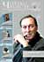
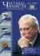
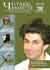

ЖУРНАЛ «ЧИТАЕМ ВМЕСТЕ» ПРЕДСТАВЛЯЕТ…
Наш совместный с журналом «Читаем Вместе» спецпроект – подкаст-лента, посвященная обзору новинок книжного рынка.
На протяжении пяти лет раз в месяц журнал (со страниц которого можно узнать о новых книгах, о жизни и творчестве известных писателей, об истории знаменитых произведений, новости книжного мира в России и за рубежом, выставках и ярмарках, проектах в поддержку чтения и многом другом) – так вот, ежемесячно это достойное издание выбирало несколько наиболее интересных по мнению редакции книжных релизов. А мы с нашими актерами в свою очередь записывали о них подкасты, в которых совмещается обзор нового произведения, рецензия и озвученный фрагмент из самой книги. (MP3-записи размещаются на официальном сайте журнала, а также на всех основных подкаст-терминалах рунета.)
Мне очень симпатична культуртрегерская политика этого издания как пропагандирующего чтение независимого «книжного навигатора», так что я весьма рад такому сотрудничеству. Ведь как говорил Цицерон, «дом, в котором нет книг подобен телу, лишенному души».
[Мнение редакции журнала по поводу тех или иных рецензируемых ею книг может не совпадать с нашим.]
|
№
12, декабрь 2013 г. [Владимир Шаров, Владимир Сорокин Кен Кизи, Элизабет Гилберт]
№
11, ноябрь 2013 г.
№
10, октябрь 2013 г.
№
8-9, август-сентябрь 2013 г. |
№
7, июль 2013 г.
№
6, июнь 2013 г.
№ 5, май 2013 г.
№
4, апрель 2013 г. |
№
3, март 2013 г.
№
2, февраль 2013 г.
№ 1, январь 2013 г. |
|
№ 12, декабрь 2012 г. [Мо Янь, людмила Улицкая Александр Иличевский, Джон Леннон]]
№
11, ноябрь 2012 г.
№
8-9, август-сентябрь 2012 г. |
№
6, июнь 2012 г.
№
5, май 2012 г.
№
4, апрель 2012 г. |
№ 2, февраль 2012 г.
№ 1, январь 2012 г.
|
|
№ 12, декабрь 2011 г. [Марк Леви, Кетиль Бьёрнстад, Энтони Горовиц, Шерлок Холмс, Александр Марков, Эволюция человека.]
№ 11, ноябрь 2011 г.
№ 10, октябрь 2011 г.
№ 8-9, август-сентябрь 2011 г.
|
№ 5, май 2011 г.
№ 4, апрель 2011 г. |
№ 2, февраль 2011 г.
№ 1, январь 2011 г.
|
|
№ 10, октябрь 2010 г.
№ 8-9, август-сентябрь 2010 г. |
№ 6, июнь 2010 г.
№ 5, май 2010 г.
№ 4, апрель 2010 г.
|
|
 №
10, октябрь 2012 г.
№
10, октябрь 2012 г.  № 6, июнь 2011 г.
№ 6, июнь 2011 г.
 № 11, ноябрь 2010 г.
№ 11, ноябрь 2010 г.